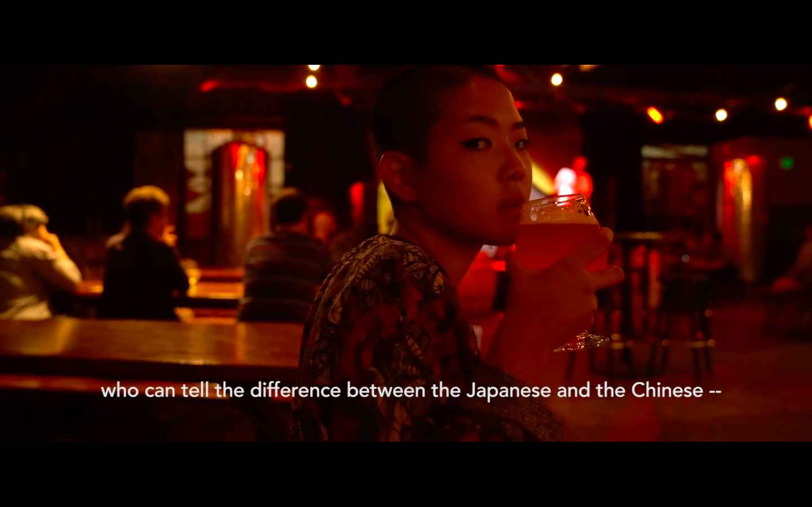

Image: Illustration by @maaike.hartjes
Ethnic, exotic, oriental, are all terms and words that I've heard on countless occasions to
describe not only Asian
cuisines and dishes, but they are more prominently associated with the depiction and
representation of Asian women, both
onscreen and in our current contextual setting. The seminal and heavily cited work by Edward
Said, has coined this form
of exoticization of the East, or 'the Orient', in his work Orientalism
in which he "considers Orientalism as a powerful European ideological creation - a way for
writers, philosophers and
colonial administrators to deal with the 'otherness' of eastern culture, customs and
beliefs" (Said, 2003). Thus, giving
way to contemporary racist beliefs and Othering philosophies within our contextual setting.
The ‘orientalizing’ of
entire people groups and countries has filtered into our everyday vernacular – when speaking
about Other(s), and trying
to superimpose this Orientalist ideology within the everyday.
Unfortunately, my own experiences, like so many others in my social environment, have become
a by-product of this
dynamic between the hyper-sexualisation of Asian females and media-generated representations
of women in manga/anime
that have permeated into Eurocentric media outlets and pop-culture - along with early onset
depictions of Asian female
characters in Hollywood, with movies such as Daughter of Dragon (1931), The World of Suzie
Wong (1960), Year of the
Dragon (1985).
Having moved from San Francisco to Rome during my early adolescent years, I was made so
readily aware of how my physical
features immediately defined me to others around me: being called cinesina (which literally
translates into small
Chinese girl) and constantly being reminded how 'flat' my face was, or how ‘oriental’ I
looked. How I looked and sounded
to the rest of the people in my classroom became so embedded in how I viewed myself, as
always different to the rest of
my (white) classmates, constantly exoticized through this Othering lens.
Now I’ve had the chance to speak more and more about these instances of microaggressions and
racism that occured at such
an early age with other friends, who had also experienced the same types of interactions.
This has made me realize just
how normalized this form of sexualized racism is, which led me – like others – to oftentimes
suppress this responsive
anger or irritation towards these comments, seeing as it felt like even if we said something
back then it wouldn’t make
a difference, as even the teachers in these classrooms were aware of these comments being
said and still remained
silent.
Immediately defining a person based on their 'oriental and exotic' features, has created
demeaning and degrading
language and has constructed racial tropes that have led people to think they are able to
pinpoint everything about a
woman solely based on the fact that 'she looks Asian'. These stereotyped tropes are so
deeply imbedded in historical
depictions of Asian women, and as suggested by cultural theorist and scholar Stuart Hall,
these constructions of
Other(ness) are heavily intertwined with identity politics, which “get hold of the few
simple and easily grasped,
characteristics about a person and reduce everything about the person to those traits,
fixing them into eternity”
(Merskin, 2009). It is precisely this notion of longevity that upholds and reinforces racial
caricatures in our everyday
life. This is exemplified through several North American comedy films that make fun of Asian
nail salons and their
employees' accents, or martial arts movies that play upon these embedded stereotypes of the
'kung fu master', or the
submissive Asian sub-character. Hall further speaks about how "consistency of stereotypical
portrayals is likely to add
credibility to those portrayals, as they take on an aura of naturalness and truth" (Merskin,
2009). Hence, these
portrayals are "constantly reified through the lack of contradictory images and information"
(Merskin, 2009), present in
our spaces of the everyday, as a byproduct of media-generated stereotypes.

Still shot from video by: Kyoko Takenaka (@jinjabrew)
Kyoko Takenaka is a Japanese-American musician,
filmmaker, director and
performer, whose work HOME speaks directly to this ongoing and normalized take on the
fetishization of Asian women, by primarily
white-cis men. Takenaka recorded countless conversations in bars, on dates, and in ubers
with men commenting on her own
heritage, her appearance, and making sweeping statements on their 'take' on Asian cultural,
culinary histories, and
Asian countries. She directly conveys the shared interaction we as asian women face with
strangers who try to ‘flirt’ by
guessing our ethnicity, or by saying that 'they just have a thing' for Asian women. These
interactions are the product
of centuries of degrading interpretations of East Asia and Southeast Asian (visual) culture,
which has moulded
sexualized representations of Asian women; depicted as cute and or submissive.
Takenaka films her blank facial expressions as she records herself listening to these audio
recordings. Her building
anger and frustration are all subtly shown through her blankness, the slight raising of her
eyebrows, and her side eye.
Her still shots not only depict just how normalized these interactions are, especially in
Western Europe and North
America, but they show how oftentimes these statements saying, that “I looooove asian food,
but will never eat chicken
feet”, generate such a disbelief upon hearing them that the rage and anger one feels towards
these comments can be
processed much later on. In fact, as stated by Takenaka herself “she sat there in disbelief
every time digesting the
audacity of these men, recording and archiving allowed me the space to know that one day, my
anger and trauma would be
used for something; it would not swallow or eat me whole then or now" (Takenaka, 2021).
Takenaka’s HOME video is triggering me for
me, like many others, yet it can be seen as a way to convey just how intertwined racism and
hyper-fetishisization are, and although it "centers Takenaka's Othering in such close
proximity to whiteness” (Takenaka,
2021), this video pushes forth new types of discussions, ones of outrage and of showing just
how universal these
experiences can be for so many women.

Illustration by: @seeyousioe
Ultimately, I believe that we can celebrate differences (whether that be cultural, social,
and or historical), as
‘difference’ is not the issue here. It is how we frame, depict, represent, and speak about
differences that leads there
to be such polarizing, degrading, and fetishizing representations of Asian women - through a
sexual, racial, and
ethnicizing lens. In order to unmake the decades of stereotyped and fetishized tropes
surrounding Asian (femme)
representation, we have to start creating a space for discussion: through artworks, through
music, through film, in
which (accessible) discussions are designed and displayed for the people and do not simply
reproduce the same logic of
display about Others. These conversations can acts as a crucial tool in the reimagining of a
logic of representation,
and of difference that discards linearity and completely unmakes a heteronormative logic of
racial governance and
fetishization. Organizations like @asian.raisins, @panasiancollective
, @miss_zing, gall-dem, @calikyecab,
Stop AAPI Hate, and AMHP
amongst many others helps us all to collectively
rethink a future in which racial
stereotyping, hate crimes and hyper fetishization have no place to be reified within. Where
our cultural and social
‘differences’ are no longer seen as a 'marker' to hyper sexualize or fetishize us.